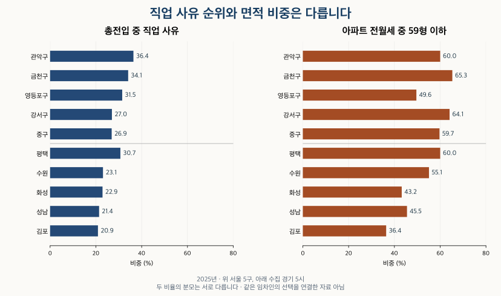

이사와 인구 · 직업 사유와 전월세 면적
직장 때문에 이사 온 곳, 작은 아파트 전월세 비중도 높을까?
2025년 직업 전입 사유 비중으로 고른 서울·수집 경기 10개 지역의 59형 이하 아파트 전월세 구성을 비교합니다. 지역 순위의 범위, 전세·월세 차이와 연도별 변화, 사람과 계약 통계의 한계를 확인하세요.
분석 기간 · 사유 2013~2025 · 전월세 2011~2026.9 · 7~9월 잠정 | 자료 기준일 · 계약 자료 2026-10-04 · 사유 검산 2026-10-15
직장 때문에 이사 온 사람이 많은 지역이라면 작은 아파트 전월세도 많을까요? 직업을 주된 전입 사유로 신고한 사람의 비중이 높은 서울 5개 구와 수집 경기 5개 시를 골라, 같은 지역의 아파트 전월세 면적 구성을 비교했습니다. 사람을 센 통계와 계약을 센 통계는 함께 살펴볼 수 있지만, 같은 사람의 선택으로 연결할 수는 없습니다.
2025년 직업 사유 비중은 서울 25구 중 관악구 36.4%, 수집 경기 20시 중 평택시 30.7%가 가장 높았습니다. 선정한 10개 지역의 59형 이하 아파트 전월세 비중은 36.4~65.3%로 달랐고, 직업 사유 순서와 일치하지 않았습니다. ‘직장 때문에 많이 들어오는 곳’이라는 설명만으로 작은 아파트의 계약 구성을 예상하기는 어렵습니다.
어떤 지역과 전입 사유를 비교했나요?
서울은 25개 자치구, 경기는 아파트 전월세 자료를 수집한 지역을 시 단위로 합친 20개 시 안에서 비교했습니다. 일반구가 있는 도시는 구를 합쳐 한 번만 셌습니다. 수집 경기 20시의 순위를 경기도 전체 31시군의 순위로 읽지 않습니다. 아래 전체 비교 표에서 포함 지역을 확인할 수 있습니다.
직업 사유 비중은 ‘직업을 주된 사유로 신고한 전입 인원 ÷ 총전입 인원’입니다. 읍면동 경계를 넘는 이동이므로 같은 시·구 안 이동도 포함됩니다. 전출을 뺀 순유입이나 일자리 수와는 다릅니다. 한 세대의 대표 사유 하나를 사람 수로 집계하기 때문에, 전입자 모두가 새 직장을 구했다는 뜻도 아닙니다.
KB의 ‘상위 지역 비교’에서 상위는 행정 단위의 상위 지역을 뜻합니다. 예를 들어 수원은 경기도와 비교합니다. 화면의 표현을 지역 순위로 바꾸지 않았습니다. 보유한 일부 일반구 응답은 총전입 분모가 0인 채 비율 0을 표시했으므로 실제 직업 전입이 없었다고 해석하지 않았습니다.
KB에서 확인한 지역 사유 계열은 2023년까지여서 KOSIS 공식표로 2024~2025년을 보충하고 겹치는 기간을 대조했습니다. 지역 선정은 최신 완결 연도인 2025년의 직업 비중만으로 했습니다. 아파트 면적 비중이 높은 곳을 뒤에서 골라 넣지 않았습니다. 사유별 통계의 의미는 서울·경기 전입 사유 13년에서도 확인할 수 있습니다.
직업 때문에 들어온 비중은 어디가 높나요?
서울에서는 관악·금천·영등포·강서·중구, 수집 경기에서는 평택·수원·화성·성남·김포가 각 비교 범위의 상위 5개 지역입니다. 비중 순위와 절대 인원은 함께 봐야 합니다. 수원은 직업 비중이 평택보다 낮지만 직업 사유 전입 인원은 더 많습니다.
| 비교 범위 | 순위 | 지역 | 총전입(명) | 직업 사유(명) | 직업 비중 |
|---|---|---|---|---|---|
| 서울 25구 | 1 | 관악구 | 83,502 | 30,375 | 36.4% |
| 서울 25구 | 2 | 금천구 | 28,119 | 9,578 | 34.1% |
| 서울 25구 | 3 | 영등포구 | 54,285 | 17,082 | 31.5% |
| 서울 25구 | 4 | 강서구 | 68,676 | 18,536 | 27.0% |
| 서울 25구 | 5 | 중구 | 17,366 | 4,671 | 26.9% |
| 수집 경기 20시 | 1 | 평택시 | 96,139 | 29,505 | 30.7% |
| 수집 경기 20시 | 2 | 수원시 | 145,151 | 33,552 | 23.1% |
| 수집 경기 20시 | 3 | 화성시 | 129,628 | 29,713 | 22.9% |
| 수집 경기 20시 | 4 | 성남시 | 107,590 | 22,985 | 21.4% |
| 수집 경기 20시 | 5 | 김포시 | 48,209 | 10,071 | 20.9% |
이 순위는 취업 기회, 통근 편의 또는 거주 만족도 순위가 아닙니다. 전입 전체라는 분모가 달라져도 비중은 바뀝니다. 전입이 많아도 전출이 더 많을 수 있으므로 지역 인구가 늘었다는 뜻으로 바꾸지도 않습니다.
선정 범위인 서울 25구·수집 경기 20시의 전체 순위 보기
반올림 전 직업 인원÷총전입으로 순위를 정했고 동률이면 같은 순위를 줍니다. 표시 비율이 같아 보여도 실제 순위는 다를 수 있습니다. 상위 5위 경계의 동률은 모두 남기는 규칙이며 이번 선정에는 경계 동률이 없었습니다.
| 순위 | 지역 | 총전입(명) | 직업 사유(명) | 직업 비중 |
|---|---|---|---|---|
| 1 | 관악구 | 83,502 | 30,375 | 36.4% |
| 2 | 금천구 | 28,119 | 9,578 | 34.1% |
| 3 | 영등포구 | 54,285 | 17,082 | 31.5% |
| 4 | 강서구 | 68,676 | 18,536 | 27.0% |
| 5 | 중구 | 17,366 | 4,671 | 26.9% |
| 6 | 종로구 | 18,734 | 5,006 | 26.7% |
| 7 | 용산구 | 28,570 | 7,229 | 25.3% |
| 8 | 동작구 | 52,597 | 12,966 | 24.7% |
| 9 | 마포구 | 49,402 | 11,807 | 23.9% |
| 10 | 구로구 | 41,441 | 9,771 | 23.6% |
| 11 | 광진구 | 48,476 | 11,145 | 23.0% |
| 12 | 강남구 | 80,696 | 18,147 | 22.5% |
| 13 | 송파구 | 86,386 | 18,815 | 21.8% |
| 14 | 성동구 | 41,292 | 7,870 | 19.1% |
| 15 | 서초구 | 61,724 | 11,560 | 18.7% |
| 16 | 서대문구 | 38,581 | 7,059 | 18.3% |
| 17 | 강북구 | 29,458 | 5,081 | 17.2% |
| 18 | 중랑구 | 42,548 | 7,282 | 17.1% |
| 19 | 은평구 | 50,449 | 8,552 | 17.0% |
| 20 | 양천구 | 44,053 | 7,192 | 16.3% |
| 21 | 성북구 | 55,563 | 8,081 | 14.5% |
| 22 | 동대문구 | 59,572 | 8,240 | 13.8% |
| 23 | 도봉구 | 28,497 | 3,883 | 13.6% |
| 24 | 강동구 | 84,822 | 11,491 | 13.5% |
| 25 | 노원구 | 50,119 | 5,179 | 10.3% |
| 순위 | 지역 | 총전입(명) | 직업 사유(명) | 직업 비중 |
|---|---|---|---|---|
| 1 | 평택시 | 96,139 | 29,505 | 30.7% |
| 2 | 수원시 | 145,151 | 33,552 | 23.1% |
| 3 | 화성시 | 129,628 | 29,713 | 22.9% |
| 4 | 성남시 | 107,590 | 22,985 | 21.4% |
| 5 | 김포시 | 48,209 | 10,071 | 20.9% |
| 6 | 안산시 | 63,261 | 12,953 | 20.5% |
| 7 | 광주시 | 39,349 | 7,491 | 19.0% |
| 8 | 용인시 | 133,769 | 25,301 | 18.9% |
| 9 | 군포시 | 23,850 | 4,457 | 18.7% |
| 10 | 구리시 | 19,428 | 3,425 | 17.6% |
| 11 | 고양시 | 115,652 | 20,190 | 17.5% |
| 12 | 파주시 | 71,887 | 12,244 | 17.0% |
| 13 | 부천시 | 73,423 | 12,114 | 16.5% |
| 14 | 하남시 | 38,587 | 6,213 | 16.1% |
| 15 | 의정부시 | 51,619 | 7,892 | 15.3% |
| 16 | 안양시 | 76,128 | 11,268 | 14.8% |
| 17 | 남양주시 | 64,625 | 9,385 | 14.5% |
| 18 | 과천시 | 11,346 | 1,376 | 12.1% |
| 19 | 의왕시 | 22,527 | 2,553 | 11.3% |
| 20 | 광명시 | 52,635 | 5,506 | 10.5% |
그 지역은 작은 아파트 전월세도 많나요?
선정한 지역 안에서도 면적 구성은 다릅니다. 2025년 합산 비중은 금천 65.3%, 강서 64.1%, 평택 60.0%, 관악 60.0%, 김포 36.4%였습니다. 관악과 평택의 표시값은 같지만 다른 지역·모집단에서 계산한 값입니다. 직업 사유 비중이 가장 높은 지역이 작은 면적의 전월세 비중도 가장 높은 것은 아닙니다.
이 글의 59형은 전용 17·18평형 묶음이며, ‘59형 이하’에는 그보다 작은 전용평형도 포함합니다. 전용면적을 평으로 바꾸고 반올림한 값이 18 이하인 계약으로, 전용면적 61.1573㎡ 미만입니다. 59㎡ 이하나 법정 기준인 60㎡ 이하로 자른 수치와 다릅니다. 면적 이름과 실제 전용면적의 차이는 아파트 용어집에서 확인해 보세요.
| 지역 | 전세 비중 | 월세 비중 | 합산 비중 | 59형 이하(건) | 전체(건) |
|---|---|---|---|---|---|
| 관악구 | 47.6% | 73.5% | 60.0% | 3,538 | 5,900 |
| 금천구 | 55.2% | 72.4% | 65.3% | 2,463 | 3,770 |
| 영등포구 | 39.4% | 63.7% | 49.6% | 5,204 | 10,483 |
| 강서구 | 합산만 표시 | 합산만 표시 | 64.1% | 8,914 | 13,917 |
| 중구 | 46.4% | 70.9% | 59.7% | 2,404 | 4,024 |
| 평택시 | 합산만 표시 | 합산만 표시 | 60.0% | 12,753 | 21,248 |
| 수원시 | 49.2% | 63.8% | 55.1% | 16,410 | 29,808 |
| 화성시 | 23.7% | 59.0% | 43.2% | 15,618 | 36,152 |
| 성남시 | 38.0% | 56.9% | 45.5% | 12,112 | 26,638 |
| 김포시 | 22.6% | 49.1% | 36.4% | 4,685 | 12,855 |
전세와 월세의 비율도 구분해서 읽습니다. 합산 비율은 두 시장의 작은 면적 건수를 더한 뒤 전체 건수 합으로 나눴습니다. 두 비율의 단순평균이 아닙니다. ‘합산만 표시’는 두 시장을 나눈 값이 제공되지 않는 항목으로, 0%를 뜻하지 않습니다.

여기서 센 것은 계약입니다. 같은 주택에서 여러 번 계약하면 여러 건이고 신규·갱신·계약구분 공란을 모두 포함합니다. 작은 아파트 재고의 비중이나 실제 임차 가구의 비중은 아닙니다. 아파트 밖의 원룸·오피스텔 등도 이 계약 비교에 포함하지 않았습니다.
시간이 지나며 두 비중은 함께 움직였나요?
두 비중이 같은 방향으로 움직인 지역도 있지만, 모든 지역을 설명하는 관계는 아닙니다. 2013년과 2025년을 비교하면 화성의 직업 사유 비중은 30.5%에서 22.9%로 낮아졌지만, 59형 이하 전월세 비중은 26.6%에서 43.2%로 높아졌습니다.
| 지역 | 직업 비중 2013 | 직업 비중 2025 | 직업 인원 2013 | 직업 인원 2025 | 59형 이하 2013 | 59형 이하 2025 | 계약 전체 2013 | 계약 전체 2025 |
|---|---|---|---|---|---|---|---|---|
| 관악구 | 27.3% | 36.4% | 24,530 | 30,375 | 46.8% | 60.0% | 4,067 | 5,900 |
| 금천구 | 20.6% | 34.1% | 7,204 | 9,578 | 46.6% | 65.3% | 1,864 | 3,770 |
| 영등포구 | 23.5% | 31.5% | 13,544 | 17,082 | 39.8% | 49.6% | 6,550 | 10,483 |
| 강서구 | 16.1% | 27.0% | 13,648 | 18,536 | 48.6% | 64.1% | 7,957 | 13,917 |
| 중구 | 25.0% | 26.9% | 4,791 | 4,671 | 34.3% | 59.7% | 1,869 | 4,024 |
| 평택시 | 26.3% | 30.7% | 18,922 | 29,505 | 53.0% | 60.0% | 5,442 | 21,248 |
| 수원시 | 18.9% | 23.1% | 37,019 | 33,552 | 45.3% | 55.1% | 9,643 | 29,808 |
| 화성시 | 30.5% | 22.9% | 23,261 | 29,713 | 26.6% | 43.2% | 8,617 | 36,152 |
| 성남시 | 16.1% | 21.4% | 26,209 | 22,985 | 36.6% | 45.5% | 13,253 | 26,638 |
| 김포시 | 14.9% | 20.9% | 10,071 | 10,071 | 31.4% | 36.4% | 6,348 | 12,855 |
비율과 인원도 서로 다른 방향일 수 있습니다. 수원의 직업 사유 비중은 18.9%에서 23.1%로 높아졌지만 인원은 37,019명에서 33,552명으로 줄었습니다. 성남도 비중은 높아지고 직업 사유 전입 인원은 줄었습니다. 비중이 올랐다는 말만으로 직업 전입 인원이 늘었다고 판단하면 안 되는 이유입니다.
선정한 10개 지역 모두 2013년보다 2025년의 작은 면적 전월세 비중이 높았습니다. 그렇다고 매년 계속 높아졌다는 뜻은 아닙니다. 아래 연도별 표에는 두 끝점 사이의 해를 모두 남겼습니다. 2025년 직업 비중으로 고른 지역의 과거를 돌아보는 비교이며, 매년 그해 상위 지역으로 바꿔 계산하지 않았습니다.
긴 기간의 계약 건수에는 신고·확정일자 자료에 포착되는 범위의 변화도 섞입니다. 2021년 신고제 전후를 포함한 관측 건수 차이를 전부 실제 이사 수요 증가로 해석하지 않았습니다. 새 아파트 공급, 지역 주택의 면적 구성, 가구 변화와 임대차 시장 조건도 함께 달라질 수 있습니다. 이 분석은 각 요인의 기여도를 분리하지 않았습니다.
선정한 10개 지역의 전체 연도·2026년 부분 기간 보기
전월세는 2011~2025년과 2026년 상반기·7~9월을 나눴습니다. 별표(*)는 2026년 7~9월 잠정치입니다. 2011~2012년과 2026년은 같은 해의 전입 사유 값이 없으므로 짝지어 비교하지 않습니다. 부분 기간의 건수를 완결 연도와 직접 비교하지 마세요.
일부 지역·기간은 시장별 내역을 함께 생략하고 합산 비율을 제공합니다. 평택의 2023년 합산은 면적 비율만 제시하며 건수는 ‘미제공’으로 표시합니다. 빈칸을 다른 해의 값이나 0으로 채우지 않았습니다.
| 기간 | 직업 사유(명) | 직업 비중 | 범위 내 순위 | 59형 이하(건) | 전체 계약(건) | 합산 면적 비중 | 전세 면적 비중 | 월세 면적 비중 |
|---|---|---|---|---|---|---|---|---|
| 2011 | 자료 없음 | 자료 없음 | 자료 없음 | 1,780 | 4,146 | 42.9% | 38.8% | 58.4% |
| 2012 | 자료 없음 | 자료 없음 | 자료 없음 | 1,954 | 4,386 | 44.6% | 39.5% | 65.1% |
| 2013 | 24,530 | 27.3% | 1 | 1,903 | 4,067 | 46.8% | 40.9% | 63.1% |
| 2014 | 27,375 | 30.1% | 1 | 2,193 | 4,523 | 48.5% | 39.8% | 67.8% |
| 2015 | 28,825 | 30.5% | 1 | 1,978 | 4,050 | 48.8% | 40.4% | 61.0% |
| 2016 | 29,773 | 32.6% | 1 | 1,982 | 3,862 | 51.3% | 43.0% | 63.0% |
| 2017 | 28,584 | 31.7% | 1 | 2,286 | 4,129 | 55.4% | 45.7% | 69.7% |
| 2018 | 32,404 | 34.3% | 1 | 2,393 | 4,224 | 56.7% | 47.3% | 71.9% |
| 2019 | 32,691 | 34.9% | 1 | 2,356 | 4,197 | 56.1% | 47.8% | 71.7% |
| 2020 | 33,650 | 34.2% | 1 | 2,805 | 4,821 | 58.2% | 49.0% | 73.2% |
| 2021 | 31,695 | 35.3% | 1 | 2,989 | 5,070 | 59.0% | 50.1% | 71.3% |
| 2022 | 33,656 | 38.6% | 1 | 4,117 | 6,281 | 65.5% | 54.6% | 75.9% |
| 2023 | 30,049 | 38.5% | 1 | 3,892 | 6,180 | 63.0% | 49.2% | 78.0% |
| 2024 | 30,406 | 37.9% | 1 | 3,890 | 5,991 | 64.9% | 50.5% | 77.9% |
| 2025 | 30,375 | 36.4% | 1 | 3,538 | 5,900 | 60.0% | 47.6% | 73.5% |
| 2026 상반기 | 자료 없음 | 자료 없음 | 자료 없음 | 1,749 | 2,734 | 64.0% | 합산만 표시 | 합산만 표시 |
| 2026 7~9월* | 자료 없음 | 자료 없음 | 자료 없음 | 724 | 1,092 | 66.3% | 52.3% | 75.5% |
| 기간 | 직업 사유(명) | 직업 비중 | 범위 내 순위 | 59형 이하(건) | 전체 계약(건) | 합산 면적 비중 | 전세 면적 비중 | 월세 면적 비중 |
|---|---|---|---|---|---|---|---|---|
| 2011 | 자료 없음 | 자료 없음 | 자료 없음 | 829 | 1,779 | 46.6% | 43.7% | 62.6% |
| 2012 | 자료 없음 | 자료 없음 | 자료 없음 | 897 | 2,063 | 43.5% | 42.4% | 50.5% |
| 2013 | 7,204 | 20.6% | 9 | 869 | 1,864 | 46.6% | 43.3% | 60.1% |
| 2014 | 8,101 | 24.2% | 5 | 953 | 1,955 | 48.7% | 43.5% | 65.4% |
| 2015 | 7,874 | 23.1% | 6 | 878 | 1,785 | 49.2% | 44.8% | 60.4% |
| 2016 | 7,837 | 22.5% | 8 | 791 | 1,680 | 47.1% | 44.4% | 53.7% |
| 2017 | 8,636 | 25.2% | 4 | 923 | 1,757 | 52.5% | 49.4% | 60.7% |
| 2018 | 9,426 | 27.9% | 3 | 1,222 | 2,169 | 56.3% | 51.7% | 68.6% |
| 2019 | 9,408 | 29.0% | 4 | 1,224 | 2,111 | 58.0% | 54.6% | 68.3% |
| 2020 | 11,053 | 30.9% | 2 | 1,316 | 2,311 | 56.9% | 54.2% | 65.6% |
| 2021 | 11,259 | 31.6% | 4 | 2,492 | 3,952 | 63.1% | 59.3% | 66.0% |
| 2022 | 10,291 | 34.1% | 3 | 1,782 | 2,842 | 62.7% | 57.8% | 71.2% |
| 2023 | 9,752 | 34.4% | 3 | 2,760 | 4,241 | 65.1% | 56.4% | 72.0% |
| 2024 | 10,189 | 34.8% | 2 | 1,773 | 2,792 | 63.5% | 55.6% | 74.7% |
| 2025 | 9,578 | 34.1% | 2 | 2,463 | 3,770 | 65.3% | 55.2% | 72.4% |
| 2026 상반기 | 자료 없음 | 자료 없음 | 자료 없음 | 921 | 1,412 | 65.2% | 55.1% | 74.7% |
| 2026 7~9월* | 자료 없음 | 자료 없음 | 자료 없음 | 509 | 688 | 74.0% | 50.0% | 84.7% |
| 기간 | 직업 사유(명) | 직업 비중 | 범위 내 순위 | 59형 이하(건) | 전체 계약(건) | 합산 면적 비중 | 전세 면적 비중 | 월세 면적 비중 |
|---|---|---|---|---|---|---|---|---|
| 2011 | 자료 없음 | 자료 없음 | 자료 없음 | 1,980 | 5,693 | 34.8% | 32.4% | 47.1% |
| 2012 | 자료 없음 | 자료 없음 | 자료 없음 | 2,289 | 6,333 | 36.1% | 32.2% | 54.4% |
| 2013 | 13,544 | 23.5% | 3 | 2,605 | 6,550 | 39.8% | 32.6% | 59.6% |
| 2014 | 16,208 | 27.4% | 3 | 2,830 | 7,251 | 39.0% | 31.8% | 58.0% |
| 2015 | 16,892 | 28.7% | 2 | 2,559 | 6,602 | 38.8% | 32.9% | 48.9% |
| 2016 | 16,051 | 26.2% | 4 | 2,344 | 6,255 | 37.5% | 33.5% | 44.4% |
| 2017 | 16,015 | 25.6% | 3 | 2,772 | 6,547 | 42.3% | 36.8% | 53.4% |
| 2018 | 17,494 | 29.2% | 2 | 2,699 | 6,523 | 41.4% | 38.2% | 50.1% |
| 2019 | 17,638 | 31.0% | 2 | 3,274 | 7,161 | 45.7% | 42.3% | 55.9% |
| 2020 | 19,372 | 24.4% | 10 | 4,217 | 8,904 | 47.4% | 39.9% | 63.7% |
| 2021 | 19,740 | 32.6% | 2 | 3,774 | 8,104 | 46.6% | 41.5% | 56.2% |
| 2022 | 18,606 | 34.7% | 2 | 5,606 | 10,903 | 51.4% | 42.4% | 63.1% |
| 2023 | 18,853 | 34.6% | 2 | 4,798 | 10,240 | 46.9% | 40.1% | 58.1% |
| 2024 | 17,844 | 32.4% | 3 | 6,145 | 11,170 | 55.0% | 44.2% | 68.7% |
| 2025 | 17,082 | 31.5% | 3 | 5,204 | 10,483 | 49.6% | 39.4% | 63.7% |
| 2026 상반기 | 자료 없음 | 자료 없음 | 자료 없음 | 2,849 | 5,273 | 54.0% | 42.0% | 66.2% |
| 2026 7~9월* | 자료 없음 | 자료 없음 | 자료 없음 | 1,228 | 2,137 | 57.5% | 42.9% | 70.7% |
| 기간 | 직업 사유(명) | 직업 비중 | 범위 내 순위 | 59형 이하(건) | 전체 계약(건) | 합산 면적 비중 | 전세 면적 비중 | 월세 면적 비중 |
|---|---|---|---|---|---|---|---|---|
| 2011 | 자료 없음 | 자료 없음 | 자료 없음 | 3,744 | 7,928 | 47.2% | 43.0% | 67.3% |
| 2012 | 자료 없음 | 자료 없음 | 자료 없음 | 3,980 | 8,090 | 49.2% | 44.4% | 71.3% |
| 2013 | 13,648 | 16.1% | 16 | 3,868 | 7,957 | 48.6% | 43.1% | 67.1% |
| 2014 | 17,275 | 15.8% | 17 | 4,574 | 9,346 | 48.9% | 44.1% | 66.5% |
| 2015 | 17,371 | 18.4% | 14 | 4,222 | 8,289 | 50.9% | 46.7% | 61.4% |
| 2016 | 17,240 | 18.0% | 15 | 5,663 | 10,847 | 52.2% | 49.5% | 59.5% |
| 2017 | 18,261 | 20.2% | 11 | 4,700 | 9,145 | 51.4% | 48.0% | 62.2% |
| 2018 | 18,908 | 22.6% | 9 | 5,437 | 10,431 | 52.1% | 49.4% | 62.0% |
| 2019 | 21,042 | 26.8% | 6 | 5,878 | 10,460 | 56.2% | 52.0% | 70.2% |
| 2020 | 22,158 | 25.4% | 7 | 7,562 | 12,623 | 59.9% | 56.1% | 71.5% |
| 2021 | 21,569 | 24.7% | 9 | 8,055 | 12,636 | 63.7% | 55.4% | 78.1% |
| 2022 | 19,864 | 28.3% | 8 | 9,281 | 14,562 | 63.7% | 59.0% | 72.8% |
| 2023 | 19,316 | 28.1% | 6 | 8,641 | 14,000 | 61.7% | 53.4% | 75.9% |
| 2024 | 19,331 | 27.9% | 5 | 9,188 | 14,150 | 64.9% | 56.8% | 78.3% |
| 2025 | 18,536 | 27.0% | 4 | 8,914 | 13,917 | 64.1% | 합산만 표시 | 합산만 표시 |
| 2026 상반기 | 자료 없음 | 자료 없음 | 자료 없음 | 4,022 | 6,244 | 64.4% | 합산만 표시 | 합산만 표시 |
| 2026 7~9월* | 자료 없음 | 자료 없음 | 자료 없음 | 1,972 | 3,050 | 64.7% | 53.6% | 79.4% |
| 기간 | 직업 사유(명) | 직업 비중 | 범위 내 순위 | 59형 이하(건) | 전체 계약(건) | 합산 면적 비중 | 전세 면적 비중 | 월세 면적 비중 |
|---|---|---|---|---|---|---|---|---|
| 2011 | 자료 없음 | 자료 없음 | 자료 없음 | 513 | 1,412 | 36.3% | 32.6% | 49.1% |
| 2012 | 자료 없음 | 자료 없음 | 자료 없음 | 714 | 2,054 | 34.8% | 26.4% | 58.0% |
| 2013 | 4,791 | 25.0% | 2 | 642 | 1,869 | 34.3% | 30.6% | 42.2% |
| 2014 | 5,261 | 26.2% | 4 | 799 | 2,138 | 37.4% | 29.5% | 51.9% |
| 2015 | 5,426 | 27.0% | 4 | 655 | 1,757 | 37.3% | 31.8% | 43.7% |
| 2016 | 5,262 | 25.5% | 5 | 765 | 1,808 | 42.3% | 36.6% | 48.8% |
| 2017 | 4,895 | 23.4% | 8 | 876 | 2,147 | 40.8% | 35.0% | 49.3% |
| 2018 | 5,601 | 27.0% | 5 | 989 | 2,215 | 44.7% | 41.3% | 51.0% |
| 2019 | 5,728 | 29.2% | 3 | 1,290 | 2,413 | 53.5% | 42.6% | 67.0% |
| 2020 | 6,024 | 29.0% | 3 | 1,250 | 2,422 | 51.6% | 46.3% | 60.6% |
| 2021 | 6,387 | 32.1% | 3 | 1,596 | 2,923 | 54.6% | 47.2% | 63.6% |
| 2022 | 5,346 | 31.9% | 4 | 1,732 | 3,259 | 53.1% | 합산만 표시 | 합산만 표시 |
| 2023 | 5,558 | 29.5% | 5 | 2,473 | 4,156 | 59.5% | 합산만 표시 | 합산만 표시 |
| 2024 | 4,999 | 27.7% | 6 | 1,909 | 3,382 | 56.4% | 47.6% | 64.7% |
| 2025 | 4,671 | 26.9% | 5 | 2,404 | 4,024 | 59.7% | 46.4% | 70.9% |
| 2026 상반기 | 자료 없음 | 자료 없음 | 자료 없음 | 1,040 | 1,792 | 58.0% | 46.7% | 65.5% |
| 2026 7~9월* | 자료 없음 | 자료 없음 | 자료 없음 | 386 | 681 | 56.7% | 46.0% | 63.8% |
| 기간 | 직업 사유(명) | 직업 비중 | 범위 내 순위 | 59형 이하(건) | 전체 계약(건) | 합산 면적 비중 | 전세 면적 비중 | 월세 면적 비중 |
|---|---|---|---|---|---|---|---|---|
| 2011 | 자료 없음 | 자료 없음 | 자료 없음 | 3,080 | 5,540 | 55.6% | 51.2% | 75.3% |
| 2012 | 자료 없음 | 자료 없음 | 자료 없음 | 3,298 | 5,382 | 61.3% | 57.0% | 77.6% |
| 2013 | 18,922 | 26.3% | 2 | 2,886 | 5,442 | 53.0% | 47.0% | 72.9% |
| 2014 | 19,173 | 28.0% | 2 | 3,016 | 5,261 | 57.3% | 50.4% | 74.6% |
| 2015 | 21,944 | 28.4% | 1 | 3,333 | 5,597 | 59.5% | 51.9% | 77.7% |
| 2016 | 22,483 | 29.9% | 1 | 3,020 | 5,180 | 58.3% | 51.6% | 71.8% |
| 2017 | 25,620 | 33.4% | 1 | 3,278 | 5,682 | 57.7% | 47.7% | 72.8% |
| 2018 | 27,938 | 31.8% | 1 | 3,629 | 7,607 | 47.7% | 38.1% | 63.5% |
| 2019 | 29,905 | 31.9% | 1 | 4,249 | 8,379 | 50.7% | 41.1% | 65.2% |
| 2020 | 35,014 | 34.0% | 1 | 4,805 | 10,737 | 44.8% | 36.0% | 56.3% |
| 2021 | 38,466 | 33.3% | 1 | 8,566 | 16,137 | 53.1% | 46.8% | 59.8% |
| 2022 | 35,262 | 36.5% | 1 | 12,048 | 22,258 | 54.1% | 41.7% | 63.2% |
| 2023 | 33,442 | 34.2% | 1 | 미제공 | 미제공 | 56.5% | 합산만 표시 | 합산만 표시 |
| 2024 | 30,605 | 33.7% | 1 | 11,228 | 19,944 | 56.3% | 40.9% | 67.3% |
| 2025 | 29,505 | 30.7% | 1 | 12,753 | 21,248 | 60.0% | 합산만 표시 | 합산만 표시 |
| 2026 상반기 | 자료 없음 | 자료 없음 | 자료 없음 | 5,806 | 10,623 | 54.7% | 38.7% | 62.2% |
| 2026 7~9월* | 자료 없음 | 자료 없음 | 자료 없음 | 2,206 | 4,181 | 52.8% | 36.5% | 61.6% |
| 기간 | 직업 사유(명) | 직업 비중 | 범위 내 순위 | 59형 이하(건) | 전체 계약(건) | 합산 면적 비중 | 전세 면적 비중 | 월세 면적 비중 |
|---|---|---|---|---|---|---|---|---|
| 2011 | 자료 없음 | 자료 없음 | 자료 없음 | 4,690 | 9,979 | 47.0% | 42.9% | 61.9% |
| 2012 | 자료 없음 | 자료 없음 | 자료 없음 | 4,177 | 9,303 | 44.9% | 40.9% | 59.8% |
| 2013 | 37,019 | 18.9% | 6 | 4,366 | 9,643 | 45.3% | 40.0% | 57.0% |
| 2014 | 41,427 | 21.1% | 4 | 5,277 | 11,825 | 44.6% | 41.0% | 52.6% |
| 2015 | 40,786 | 21.5% | 3 | 5,710 | 11,584 | 49.3% | 42.9% | 59.4% |
| 2016 | 37,959 | 22.0% | 4 | 5,676 | 11,716 | 48.4% | 47.9% | 49.3% |
| 2017 | 37,288 | 21.1% | 5 | 6,075 | 12,078 | 50.3% | 44.1% | 60.6% |
| 2018 | 39,418 | 21.0% | 5 | 6,840 | 14,708 | 46.5% | 45.3% | 48.3% |
| 2019 | 37,286 | 21.5% | 5 | 8,335 | 16,334 | 51.0% | 45.8% | 62.7% |
| 2020 | 39,508 | 23.5% | 3 | 9,539 | 21,442 | 44.5% | 49.2% | 38.3% |
| 2021 | 39,003 | 21.3% | 4 | 12,940 | 23,559 | 54.9% | 49.8% | 64.9% |
| 2022 | 38,226 | 22.9% | 3 | 16,305 | 30,855 | 52.8% | 52.2% | 53.7% |
| 2023 | 37,370 | 22.2% | 3 | 18,147 | 32,744 | 55.4% | 48.5% | 66.5% |
| 2024 | 35,824 | 23.6% | 3 | 16,108 | 29,794 | 54.1% | 51.6% | 57.4% |
| 2025 | 33,552 | 23.1% | 2 | 16,410 | 29,808 | 55.1% | 49.2% | 63.8% |
| 2026 상반기 | 자료 없음 | 자료 없음 | 자료 없음 | 7,426 | 14,397 | 51.6% | 49.0% | 54.3% |
| 2026 7~9월* | 자료 없음 | 자료 없음 | 자료 없음 | 3,016 | 5,432 | 55.5% | 52.0% | 59.5% |
| 기간 | 직업 사유(명) | 직업 비중 | 범위 내 순위 | 59형 이하(건) | 전체 계약(건) | 합산 면적 비중 | 전세 면적 비중 | 월세 면적 비중 |
|---|---|---|---|---|---|---|---|---|
| 2011 | 자료 없음 | 자료 없음 | 자료 없음 | 2,296 | 9,771 | 23.5% | 18.7% | 38.5% |
| 2012 | 자료 없음 | 자료 없음 | 자료 없음 | 2,482 | 10,123 | 24.5% | 17.8% | 46.7% |
| 2013 | 23,261 | 30.5% | 1 | 2,293 | 8,617 | 26.6% | 19.5% | 43.5% |
| 2014 | 24,962 | 30.7% | 1 | 2,853 | 9,475 | 30.1% | 23.9% | 43.2% |
| 2015 | 34,235 | 23.7% | 2 | 2,821 | 10,592 | 26.6% | 20.7% | 38.7% |
| 2016 | 32,141 | 26.7% | 2 | 3,191 | 10,307 | 31.0% | 24.1% | 43.4% |
| 2017 | 33,222 | 25.6% | 2 | 3,796 | 12,291 | 30.9% | 23.3% | 46.8% |
| 2018 | 38,325 | 22.5% | 2 | 4,303 | 13,912 | 30.9% | 23.0% | 44.6% |
| 2019 | 36,489 | 21.7% | 4 | 5,311 | 14,999 | 35.4% | 26.4% | 52.6% |
| 2020 | 39,707 | 25.5% | 2 | 7,831 | 18,830 | 41.6% | 24.7% | 64.4% |
| 2021 | 38,921 | 25.4% | 2 | 10,725 | 25,075 | 42.8% | 25.7% | 61.2% |
| 2022 | 33,101 | 27.7% | 2 | 15,043 | 32,196 | 46.7% | 24.5% | 65.8% |
| 2023 | 34,578 | 24.3% | 2 | 19,064 | 40,956 | 46.5% | 24.8% | 63.3% |
| 2024 | 32,332 | 24.6% | 2 | 17,616 | 36,063 | 48.8% | 24.2% | 68.2% |
| 2025 | 29,713 | 22.9% | 3 | 15,618 | 36,152 | 43.2% | 23.7% | 59.0% |
| 2026 상반기 | 자료 없음 | 자료 없음 | 자료 없음 | 5,119 | 13,853 | 37.0% | 23.0% | 50.8% |
| 2026 7~9월* | 자료 없음 | 자료 없음 | 자료 없음 | 4,370 | 7,770 | 56.2% | 24.7% | 73.4% |
| 기간 | 직업 사유(명) | 직업 비중 | 범위 내 순위 | 59형 이하(건) | 전체 계약(건) | 합산 면적 비중 | 전세 면적 비중 | 월세 면적 비중 |
|---|---|---|---|---|---|---|---|---|
| 2011 | 자료 없음 | 자료 없음 | 자료 없음 | 4,563 | 13,086 | 34.9% | 29.9% | 54.2% |
| 2012 | 자료 없음 | 자료 없음 | 자료 없음 | 4,467 | 12,090 | 36.9% | 32.7% | 53.8% |
| 2013 | 26,209 | 16.1% | 8 | 4,852 | 13,253 | 36.6% | 30.3% | 52.4% |
| 2014 | 29,670 | 19.7% | 7 | 6,180 | 15,705 | 39.4% | 35.3% | 49.9% |
| 2015 | 29,878 | 19.5% | 7 | 7,369 | 18,367 | 40.1% | 36.0% | 47.1% |
| 2016 | 28,898 | 16.6% | 10 | 7,531 | 19,106 | 39.4% | 35.6% | 45.7% |
| 2017 | 27,082 | 17.2% | 8 | 7,783 | 18,151 | 42.9% | 39.3% | 49.8% |
| 2018 | 29,015 | 21.2% | 4 | 7,672 | 19,182 | 40.0% | 35.9% | 49.8% |
| 2019 | 27,979 | 22.1% | 3 | 7,293 | 17,498 | 41.7% | 38.7% | 50.0% |
| 2020 | 30,718 | 20.1% | 5 | 8,350 | 19,291 | 43.3% | 37.5% | 56.4% |
| 2021 | 28,923 | 20.1% | 6 | 9,050 | 21,384 | 42.3% | 37.5% | 51.6% |
| 2022 | 25,338 | 21.4% | 6 | 11,621 | 25,322 | 45.9% | 40.3% | 54.3% |
| 2023 | 26,588 | 20.9% | 6 | 14,212 | 29,186 | 48.7% | 38.0% | 63.9% |
| 2024 | 25,759 | 22.9% | 4 | 11,970 | 24,882 | 48.1% | 39.3% | 61.1% |
| 2025 | 22,985 | 21.4% | 4 | 12,112 | 26,638 | 45.5% | 38.0% | 56.9% |
| 2026 상반기 | 자료 없음 | 자료 없음 | 자료 없음 | 4,672 | 10,880 | 42.9% | 37.5% | 50.8% |
| 2026 7~9월* | 자료 없음 | 자료 없음 | 자료 없음 | 1,896 | 4,149 | 45.7% | 39.2% | 53.5% |
| 기간 | 직업 사유(명) | 직업 비중 | 범위 내 순위 | 59형 이하(건) | 전체 계약(건) | 합산 면적 비중 | 전세 면적 비중 | 월세 면적 비중 |
|---|---|---|---|---|---|---|---|---|
| 2011 | 자료 없음 | 자료 없음 | 자료 없음 | 1,355 | 4,879 | 27.8% | 19.6% | 48.0% |
| 2012 | 자료 없음 | 자료 없음 | 자료 없음 | 2,044 | 6,565 | 31.1% | 23.0% | 50.4% |
| 2013 | 10,071 | 14.9% | 14 | 1,996 | 6,348 | 31.4% | 23.6% | 45.8% |
| 2014 | 9,918 | 13.4% | 18 | 2,447 | 9,156 | 26.7% | 17.3% | 46.7% |
| 2015 | 9,447 | 16.5% | 12 | 2,117 | 6,707 | 31.6% | 19.5% | 47.4% |
| 2016 | 9,549 | 16.2% | 11 | 2,415 | 8,692 | 27.8% | 23.3% | 31.6% |
| 2017 | 10,598 | 13.2% | 16 | 2,765 | 7,743 | 35.7% | 26.8% | 44.9% |
| 2018 | 12,916 | 15.2% | 14 | 3,097 | 8,607 | 36.0% | 23.5% | 53.0% |
| 2019 | 12,491 | 19.7% | 7 | 2,846 | 8,643 | 32.9% | 26.5% | 40.5% |
| 2020 | 16,843 | 15.1% | 13 | 3,922 | 11,573 | 33.9% | 24.5% | 46.4% |
| 2021 | 13,381 | 18.4% | 9 | 4,322 | 11,296 | 38.3% | 23.5% | 54.2% |
| 2022 | 10,750 | 20.4% | 9 | 6,658 | 16,101 | 41.4% | 25.1% | 54.7% |
| 2023 | 10,915 | 19.5% | 11 | 5,568 | 14,995 | 37.1% | 23.6% | 50.8% |
| 2024 | 10,930 | 20.0% | 5 | 5,625 | 14,734 | 38.2% | 24.4% | 50.8% |
| 2025 | 10,071 | 20.9% | 5 | 4,685 | 12,855 | 36.4% | 22.6% | 49.1% |
| 2026 상반기 | 자료 없음 | 자료 없음 | 자료 없음 | 1,848 | 5,606 | 33.0% | 24.1% | 42.8% |
| 2026 7~9월* | 자료 없음 | 자료 없음 | 자료 없음 | 1,018 | 2,698 | 37.7% | 23.8% | 49.5% |
전월세 후보지를 고를 때 어떻게 쓸까요?
직업 사유 통계는 지역을 더 알아볼 출발점으로 쓸 수 있습니다. 원하는 집과 출퇴근 조건을 대신 확인해 주지는 않습니다.
- 비교 범위와 분모부터 확인하세요. 서울 구끼리인지 수집 경기 시끼리인지, 비중인지 인원인지 적어 둡니다.
- 원하는 주택 유형과 면적을 맞추세요. 이 글의 아파트 면적 비중을 오피스텔·원룸이나 지역 전체 임차 가구에 적용하지 않습니다.
- 전세·월세와 계약 시기를 구분하세요. 내역이 생략된 항목을 추정해 채우지 말고, 관심 단지의 같은 면적·최근 계약을 따로 살펴봅니다.
- 실제 통근과 비용을 확인하세요. 근무지까지의 시간, 교통편, 보증금과 월 부담을 후보 집 기준으로 비교합니다. 직업 사유 비중만으로 통근이 편하다고 결론 내리지 않습니다.
직업 전입이 많은 지역에서 작은 아파트 계약도 많이 관측될 수 있습니다. 다만 같은 사람들이 그 집을 골랐다는 증거는 없습니다. 지역 통계를 이해한 뒤 실제 후보 주택의 조건을 확인하는 순서가 필요합니다.
자료·계산 방법과 공개 집계
전입 사유는 KOSIS ‘시군구/전입사유별 이동자수’의 2013~2025년 총전입을 사용했습니다. 공식표 갱신일은 2026년 1월 29일, 자료 확인일은 2026년 10월 15일입니다. KB 보유 기간과 공식표의 겹치는 값, 시·군 합계와 광역 합계, 사유별 합을 따로 대조했습니다. 전체 주민의 대표 사유이며 아파트 임차인만의 응답이 아닙니다.
전월세는 자료 기준일 2026년 10월 4일에 수록된 서울 25구·수집 경기 36개 지역의 2011년 1월~2026년 9월 아파트 계약을 사용했습니다. 이를 서울 25구·경기 20시로 대응시켰고, 직업 사유로 선정한 10개 지역만 면적 구성을 비교했습니다. 전용면적과 금액이 유효하고 계약구분의 충돌 등 분석 제외 조건에 해당하지 않는 계약을 포함합니다. 계약구분이 비어 있다는 이유만으로 제외하거나 신규로 바꾸지 않았습니다. 월 차임이 양수이면 월세에 포함했습니다.
전용평형은 전용면적을 3.3058로 나눈 뒤 소수 첫째 자리에서 반올림한 정수입니다. 59형 이하 비중은 그 값이 18 이하인 계약 수를 전체 적격 계약 수로 나눈 값입니다. 비율은 마지막에 소수 첫째 자리로 반올림했습니다. 연도·시장·지역별 합계와 면적 분류를 같은 원자료에서 두 방식으로 독립 계산해 대조했습니다.
전세·월세 내역은 중구 2022·2023년, 강서 2025년·2026년 상반기, 관악 2026년 상반기, 평택 2023·2025년에 합산만 제공합니다. 평택 2023년은 합산 건수도 제공하지 않습니다. 작은 집계가 다른 공개 값에서 거꾸로 계산되지 않도록 정한 제공 범위입니다. 해당 기간의 합산 면적 비율은 모두 남겼습니다.
출처는 KOSIS 전입 사유 공식표, KB 인구 통계, 국토교통부 아파트 전월세 자료입니다. 공개 집계 파일(JSON)에는 45개 지역의 공식 연도별 사유 비중·순위와 선정 지역의 제공 가능한 전월세 면적 구성을 담았습니다. 공개하지 않은 건수와 개별 계약·주택 식별 정보는 포함하지 않습니다.
분석·집필: 파파펭귄 (Nobot Kang). 에이전트로 공식 원표·지역·면적 대조, 결합 공개 범위 검증, 도표 제작과 초안 검토를 보조했습니다.